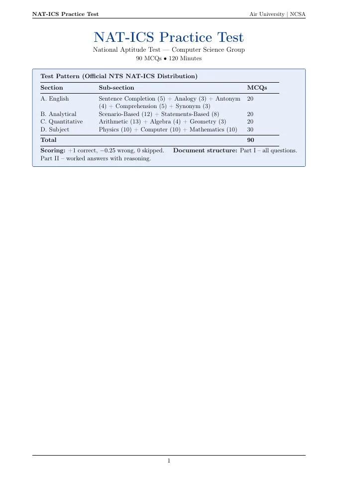
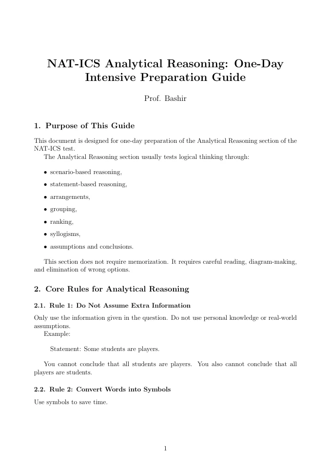
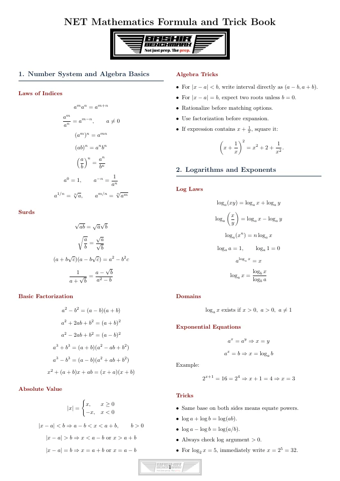
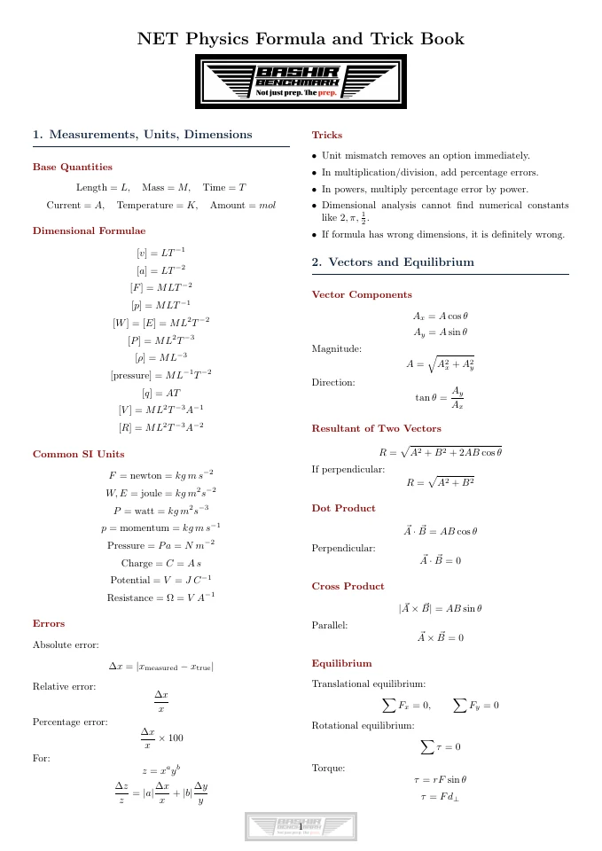
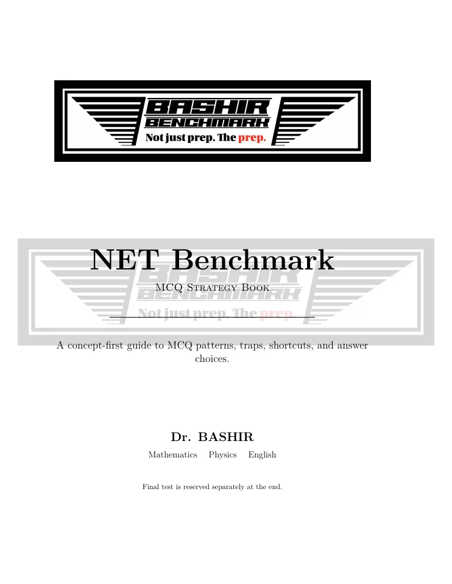

Beginnings
Computer networks
A continuing education
H-12, Islamabad
The opening chapter: learning how networks connect people, information, and systems.
I’m Adnan Bashir. I study how machines learn from changing data, teach cybersecurity, and build tools that make complex ideas visible.
My work connects machine learning, time-series analysis, and cybersecurity education. I’m interested in the moments when data changes—and how we can help people understand what that change means.
I bring research into the classroom through numerical examples and small, inspectable experiments. My work moves between statistical methods, software tools, and the visual language we use to explain them.
Networks, security, machine learning, and music. Different chapters, connected by the same curiosity.
A continuing education
H-12, Islamabad
The opening chapter: learning how networks connect people, information, and systems.
NUST · School of Electrical Engineering & Computer Science
Islamabad, Pakistan
An engineering foundation for the work in systems and security that followed.
Ebryx / FireEye
Lahore, Pakistan
Working with malware analysis, at the intersection of software behavior and security.
University of New Mexico
Albuquerque, USA
Graduate study focused on machine learning and data.
Open Technology Fund · UMass Amherst
Massachusetts, USA
A fellowship chapter connecting technology, research, and security.
University of New Mexico
Albuquerque, USA
Engineering with machine learning and data-driven methods.
Dunaway Productions
Albuquerque, USA
Another way to explore patterns: rhythm, sound, and electronic music.
State Government of New Mexico
New Mexico, USA
A role centered on the stewardship of data in state government.
University of New Mexico · ABD / PhD Candidate
Albuquerque, USA
Ongoing doctoral research in unsupervised machine learning and changing data streams.
NCSA · Air University
Islamabad, Pakistan
Teaching networks, AI, and security while continuing research on learning from changing data.
Investigating how to divide a multivariate time series into meaningful segments and identify the states within it. The work brings boundary detection and state discovery into a shared experimental workflow.
Where does one behavior end, and another begin?
Inspect neighboring windows, score potential boundaries, and explore how segments relate to recurring states.
Exploring how comparisons between neighboring windows reveal changes in a signal. Experiments examine window size, feature behavior, and boundary scores across different datasets.
The influence of window length, feature changes, and the tolerance used to match detected boundaries.
A boundary should reflect a change in the underlying behavior, with evidence that can be inspected.
Studying nearest-neighbor two-sample tests and ISSD-related methods to understand the evidence behind a detected change. Numerical walkthroughs and visual experiments make assumptions and test behavior easier to inspect.
Do two windows contain evidence of the same distribution?
Work through the statistic, its null behavior, and what changes under an alternative hypothesis.
Published work and the structures behind my ongoing research. Open a first page to explore the full document.
 Open the document
Open the document A Real Time Detector for Regime Shifts in Data Streams via an Unsupervised, Multivariate Framework.
Download PDF Open the document
Open the document From causal stream input to online state labels: boundary evidence, contrastive representation, prototype memory, and smoothing.
Download PDFFall 2026 / Air University
I use concrete examples, numerical walkthroughs, and interactive experiments to help students move from intuition to understanding.
How do we represent knowledge, search for solutions, reason under uncertainty, and learn from data?
What happens between sending a message and receiving it? Follow data through protocols, networks, and the Internet.
Practice, reasoning, and revision. A selection of my teaching materials, with the original PDFs ready to read and download.

Open the documentA complete practice paper with English, analytical reasoning, quantitative, and subject sections, followed by worked answers.
Download PDF
Open the documentArrangements, grouping, rankings, and statement-based reasoning, with an emphasis on diagrams and careful elimination.
Download PDF
Open the documentA compact reference for algebra, logarithms, functions, and more, paired with worked shortcuts and revision notes.
Download PDF
Open the documentUnits, dimensions, vectors, equilibrium, and further physics topics, organized as a practical formula and trick book.
Download PDF
Open the documentA concept-first collection of question patterns, distractors, and problem-solving strategies, with a final practice test.
Download PDFAlongside research and teaching, I build interactive visualizations: tools for inspecting time-series boundaries, exploring statistical tests, and explaining the mathematics behind machine learning.
Changing a parameter should reveal something. A visualization becomes useful when it helps us ask a better question.
Explore the projectsFrom detecting change in a stream to learning from a network. One equation from my published research, alongside five foundations that help connect these ideas.
DRUM combines changes in a stream’s mean, variability, and crossings of its running mean to support unsupervised detection of regime shifts.
i indexes the n variables; j and k are the starting positions of two windows of length d + 1. The deltas are absolute differences in window means, standard deviations, and running-mean crossing counts. The weights α, β, γ lie in [0, 1]; the paper does not require them to sum to one.
Bashir & Estrada · DRUM, Eq. (4), p. 296Bandwidth and noise set the limits of communication. Those limits shape how sensing, learning, and inference move across a network.
C is capacity in bits per second; B is bandwidth in hertz; S/N is the signal-to-noise power ratio in linear units. This form applies to a band-limited additive white Gaussian noise channel with an average signal-power constraint.
Shannon · A Mathematical Theory of Communication, 1948Every packet and inference request spends time inside a system. Little’s law connects that time to throughput and the amount of work in flight.
L is the mean number of items in the system; λ is the effective arrival rate; W is the mean time spent there. Use consistent system boundaries and a stable regime with finite long-run averages.
Little · A Proof for the Queuing Formula L = λW, 1961An unusual observation is evidence, not a verdict. Bayesian reasoning combines observations with prior knowledge to update a hypothesis about the system.
A is a hypothesis, such as an anomalous state; E is observed evidence. P(A) is the prior and P(A | E) is the posterior. This event-based form requires P(E) > 0.
Bayes’ rule · Deep Learning, §3.11A model learns by assigning probability to observed outcomes. Cross-entropy turns that mismatch into a training objective for tasks such as traffic classification.
For one example, y_c is the target probability for class c, p̂_c is the predicted probability, and K is the number of classes. Both probability vectors sum to one. Predictions must be positive wherever targets are positive. Natural logarithms give loss in nats.
Cross-entropy · Deep Learning, §3.13Entropy describes uncertainty in a distribution. It provides a shared mathematical language for communication patterns and probabilistic predictions.
X is a discrete random variable with probability mass function p(x). Base-two logarithms give bits, and 0 log 0 is defined as 0. Entropy alone does not establish that traffic is anomalous or that a model is calibrated.
Shannon · A Mathematical Theory of Communication, 1948Research tools, small utilities, and creative experiments. These are a few of the things I’ve built along the way.
A browser speed test with an instrument-style dashboard for download speed, upload speed, and latency.
Analog and digital gauges · configurable appearance · connection measurements
Open project An internet connection is required.Tap along with a rhythm to estimate its tempo. Follow BPM, the running average, and the range of your taps through a customizable gauge.
Tap tempo · session log · minimum and maximum BPM
Open project A tap-tempo tool; it does not analyze uploaded audio.Explore time-series boundaries and states through an interactive SegStream workspace with embedded datasets and saved analysis.
Signal inspection · window comparisons · boundary and state exploration
Open project Includes the bundled research data. Initial loading may take a moment.An evolving composition of Urdu expressions, shaped by script, scale, and color. Explore a different side of my work through typography.
Urdu font choices · six color palettes · animated word layout
Open project Includes embedded Urdu fonts.